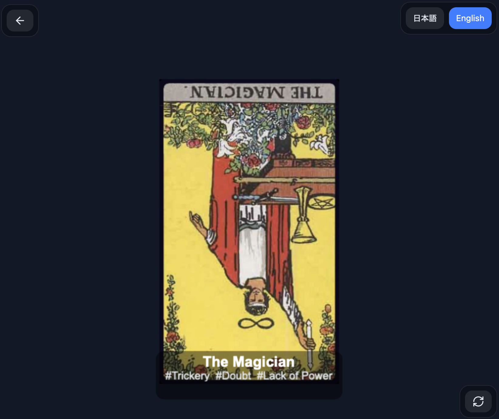

Creative support tool
Tetorica Tarot

A lightweight tarot-based idea generator for creators. Draw a card, read its keywords, and use it as a spark for stories, characters, comics, games, or worldbuilding.
What it is
Tetorica Tarot is not a fortune-telling app. It is a small thinking tool that helps creators turn tarot cards into ideas.
What it does
- Draws a random Major Arcana card
- Supports upright and reversed meanings
- Shows short keyword-based interpretations
- Designed for quick idea generation
How to use
- Open the app
- Tap the card to flip it
- Tap again to draw another card
- Use the keywords as inspiration
Concept
Instead of generating a complete story for you, Tetorica Tarot gives you a small trigger. You interpret the card. You build the story. It is designed as a creative support tool, not a replacement for your process.